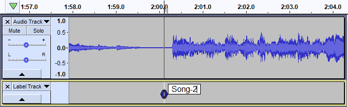

Splitting a recording for export as separate tracks
We describe the basic concepts of removing unwanted audio, identifying and labeling boundaries between songs, maximizing volume then using Export Multiple.
If you already have each song in Audacity tracks one above the other, you can still follow this tutorial. Instead of labeling as described here, name each song using that track's dropdown menu. At the Export Multiple step, split files based on Tracks instead of Labels.
- Sometimes songs on live recordings flow together. If you want to split a live recording into songs without any audible break between the songs on the CD you must use burning software that can set the "gap" or "pause" between tracks to 0 seconds and can burn in "disk-at-once" (DAO) mode. See Gapless burning.
Step 1 - Remove unwanted audio from the recording
- Set Snap To: Off in the Selection Toolbar
- Click the Skip to Start button

- Zoom in until you can see from the start of the track to the start of the music
- Click and drag from the start of the music to the start of the track
- Click on
Similarly, remove unwanted audio from the end of the recording and from the middle (between sides 1 and 2 of the LP or cassette). Note that later in this tutorial we will be using the Analyse > Find Silences command to identify spaces between the songs, so when you are editing the transition between side 1 and side 2 be sure to leave 2 or 3 seconds of silence, similar to what you would find between songs.
Save your work! Click on .
Step 2 - Label the songs
Mark the first song
- Click the Skip to Start button
- Click on , or use shortcut Ctrl + B.
A new label is created in a new label track underneath the audio track. The contents of the label are selected and ready for editing. If you need to play the track to decide where to place the split points, you can use "Add Label at Playback Position" instead (directly underneath "Add Label at Selection", or use shortcut Ctrl + M (on Mac it is ⌘ + .).
- Type the title of the first song
When typing the label, you should not use characters which are reserved by the operating system.
|
Mark the rest of the songs
- Using the selection tool, click near the beginning of the second song
- Repeatedly click the Zoom In button
 until you can see just the first few seconds of the song
until you can see just the first few seconds of the song - Click as closely as possible to the start of the song
- Click on , or use shortcut Ctrl + B
- Type the name of the song into the label
- 
- Repeatedly click the Zoom Out button until you can see the start of the third song
- Continue in this manner adding a label to mark the start of each song
Both these effects depend on correctly detecting the "silences" between tracks and this depends on setting their parameters appropriately for your track. See this example of adjusting Silence Finder parameters in order to place labels correctly between the songs.
Step 3 - Maximize the volume of the recording
If you did the original recording properly and avoided clipping, the recording is probably not at the maximum possible volume. In order for the CD to be burned at maximum volume and thus match other CDs in your collection we need to fix this.
- Click on {, or use shortcut Ctrl + A
- Click on
The default choice in this dialog is to amplify to a maximum of -1.0 dB. The maximum setting is 0 dB, but the default setting of -1.0 dB provides a little headroom as some players can have playback problems with audio at 0 dB.
Some consumer-level turntables, tape decks and/or amplifiers may well record stereo channels with a stronger signal in one channel than the other, which you will probably want to correct. In that case, check the box that says "Normalize stereo channels independently".One problem when copying records is that a loud click in one channel can cause Normalize to create an unwanted change in the stereo balance. In that case you should consider removing the click before the Normalize step, using Click Removal.
Step 4 - Export Multiple
Congratulations, you are now ready to export the tracks.
- Click on .
- Choose the Export Format from the pop-up menu:
- Click the button and pick the place where your exported tracks will be saved.
- Under Split Files Based On:
 Labels should be checked
Labels should be checked Include audio before first label should be unchecked, as there is no audio before the first label
Include audio before first label should be unchecked, as there is no audio before the first label
- Under Name Files:
- Using Label/Track Name should be checked.
- Click the button.
- Metadata Editor will appear for the first song. The Track Title and Track Number will be pre-filled from the labels, but you can enter any additional information for that song that you wish (for example, Artist Name and Album Title).
- Click the button in the Metatdata Editor (not the button).
- Metadata Editor will appear for the next and the subsequent songs; as before, enter any additional information and click "OK" for each window. When you click "OK" on the window for the last song, all the files will export.
- Often you may have an album where most tags (such as Artist Name) are common to all tracks. If you choose before exporting and add the common tags there, Audacity will pre-fill these when the metadata window for each song appears.
- If all your tags are common to each song (except of course for each song's Track Title and Track Number), you can enter the common tags before export as above but export silently without the metadata window appearing. To do this, choose Preferences, then the Import / Export tab, and uncheck Show Metadata Editor prior to export step.
- Hiding Metadata Editor at the export step can also be useful if you mainly export WAV files for which many audio players don't recognize tag information. Use AIFF (in iTunes or VLC) or FLAC if you want full metadata in lossless files.
A progress dialog might appear if the process takes more than a second or two. When the process is finished a confirmation dialog will appear listing the files that were created.
The tracks are now ready to import into the CD burning software of your choice.
Step 5: Backup
Backup your exported WAV or MP3 files - you don't want to lose all that valuable work and have to do it all over again, do you? Computer hard drives can fail, destroying all data.
Ideally use a dedicated drive (1+ TB external magnetic drives are convenient and economical), or upload to an online (cloud) storage service to store the WAVs or MP3s. Better still is to make two copies on different external devices and even better is to hold an online backup as well as the local copies.
You may want to create a taxonomic file structure - for example each album can be stored in its own folder (named for the album) within a folder named for the artist (or, perhaps, composer for classical music) to make searching and retrieval easier.
Refinements
Remove the "silence" between songs
Of course, the space between songs is not really "silent" - it contains vinyl surface noise or cassette hiss. Using standard editing techniques you can select and delete these portions of the recording, then insert whatever gap (silent portion) you want when burning the CD.
If you will be listening to the songs primarily on a computer or MP3 player you may prefer to have some silence at the end of each song. In this case select the silent portion then click on . Now you can edit the length of the silent portion to your taste. Alternatively you can delete the silent portion, then click on and specify exactly how much silence you want.
Avoiding a sudden cessation of vinyl surface noise or cassette hiss
Both of the above techniques will result in the vinyl surface noise or cassette hiss suddenly stopping, which some listeners may find annoying. You can avoid this by using at the end of each song. You can do the fade-out after the music ends (in effect fading out the noise).
Alternatively you can fade out the last second or so of the song if that works with the music. If fading the last seconds of the music you may prefer to use as that should give you a smoother and more "musical" sounding fade out.
Experiment and listen to the results to decide what works for you and for the music you are working on.
Links
> Forward to: Burning music files to a CD
< Back to: Basic Recording, Editing and Exporting